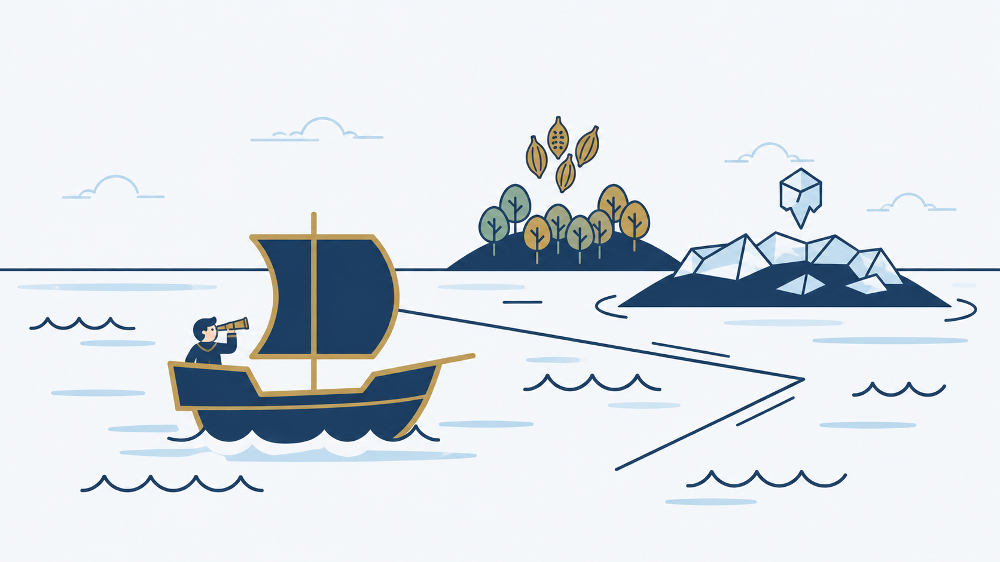
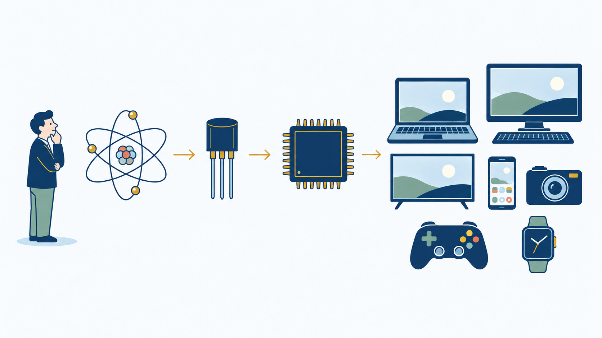
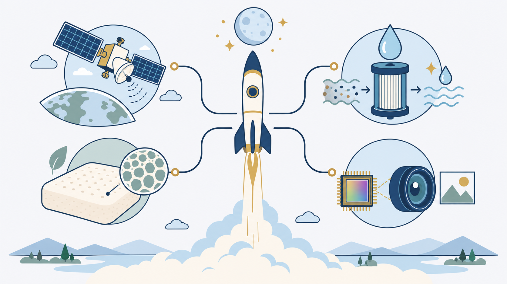
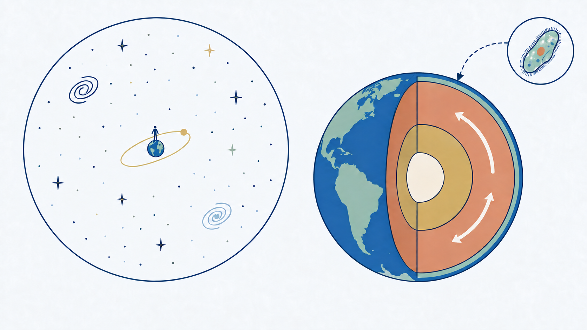

{kind=link}
{kind=link}
.jpg){kind=link}
Why We Invest in Basic Science?
Basic science is funded mainly by governments — in other words, by taxpayers. In the United States, the federal government spends tens of billions of dollars on basic research each year. The latest figure is more than $44 billion, or about $130 per person each year.

That money could be used elsewhere. It could pay for more scholarships for students who cannot afford college, another care center for people with disabilities, or someone's hospital bill. There are many places where a dollar can ease suffering right now. So why do we use this money to try to answer questions that may not seem useful in everyday life? For example, how do stars die? How do subatomic particles decay? What is the faint light left from the universe's first moments?

I think there are two reasons.
We do not know where discovery will lead
Investing in basic science is like exploration. We cannot know what lies beyond the horizon until a ship sets sail. Some ships find islands rich in spices. Others find only empty fields of ice. At first, the ice seems worthless. Centuries later, people may discover a huge oil field beneath it. Even a voyage that finds no valuable land can give us better compasses, better ships, and better maps. These tools help everyone who explores after us.

The history of basic science shows this pattern again and again. Quantum mechanics began with scientists asking what happens inside an atom. No one expected it to make money. But this curiosity led to the transistor. Transistors led to the semiconductor industry, and that industry gave us modern electronic devices.

The World Wide Web began in the same way. Physicists at CERN built a simple tool to share experimental data. That small tool is now the nervous system of modern society.

Space exploration tells the same story. During the Cold War, plans to put a person on the Moon and explore space may have seemed mostly about national pride. But those efforts also gave us weather and communication satellites, water-purification technology, memory foam, and the image sensors used in smartphone cameras.

In each case, the people who began the research did not know where it would lead. That is the nature of basic science: we sail into waters that no one has mapped. Some voyages will find only ice. But we cannot know what lies beneath that ice until we go and look.
It tells us what we are
But I think there is a deeper reason, one that is not really about money. The chance that basic science may pay off someday is only part of the answer. Its deeper value is that it helps us understand what humanity is.
The universe is about 13.8 billion years old. The roots of human civilization go back around 12,000 years, to early farming communities. Compared with the universe, Earth is smaller than a speck of dust. Human life lasts only a moment in the history of the universe — we are here, then gone. Yet humans on this tiny planet have measured the age and size of the universe and learned just how small they are. As far as we know, no other beings in the universe have ever done this.
To see how remarkable this is, reverse the scale. Imagine a tiny, single-celled creature like a paramecium, curious about the world around it. It begins to explore and learn, passing what it learns to the next generation. Each generation adds to that knowledge, until eventually these creatures understand how the mantle moves and the core spins, well enough to predict their motion. It may sound impossible, but this is what humanity is doing as we try to understand the universe.

What we inherited, and what we will pass on
Human life is only a spark in the 13.8-billion-year history of the universe. During our short lives, we make poor choices, argue, and take wrong turns. But we humans record what we learn, including what we learn from our mistakes, and pass it to the next generation.
Everything we take for granted — our institutions and every part of civilization — was inherited. We did not build it all from nothing. We stand on the work of people across centuries and thousands of years. They made mistakes, learned from them, recorded what they learned, and passed it on. Now it is our turn to add a little more and pass it forward.
Investing in basic science is one way we join this relay. We may not see an immediate reward. We do it because we want to keep trying to understand the universe, even though we are such a small part of it. We want to pass what we learn from one generation to the next. If we carry the baton a little farther today, someone will pick it up after us and keep running. That is why we keep sending ships out — toward the stars and into the heart of the atom.